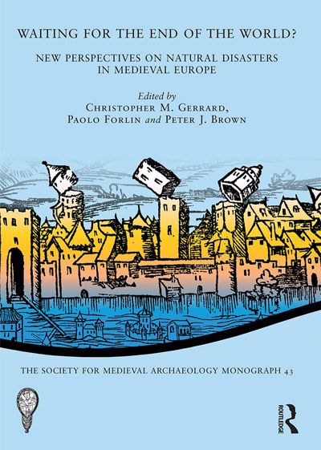

Journal Articles
- van den Bent, J & Brown, PJ (Accepted) Constructing Hydraulic Infrastructure in the Abbasid and Tulunid Capitals: Water Conduits in Baghdad, Samarra, and Cairo between the eighth and ninth centuries, Al-Masāq: Journal of the Medieval Mediterranean
- Sánchez, R, Roskin, J, Taxel, I, & Brown, PJ (2024) The Environmental History of the Navazo Agroecosystem in Late Holocene Sand Bodies Along the Atlantic Coast of Andalusia, Spain, Environmental Archaeology 1–15
- Zhang, R, Kennet, D, Brown, PJ, Song, X, Guangyao, W, Zhai, Y, & Wu, M (2023) Longquan celadon: a quantitative archaeological analysis of a pan-Indian Ocean industry of the 12th to 15th centuries, World Archaeology 54(5): 700–722
- Brown, PJ (2022) Supplying a medieval metropolis: water management and agriculture in the hinterland of early Islamic Basra, Water History 14: 379–398
- Brown, PJ (2022) The “Cup of Pharaoh” from Samarra and the Reuse of Ancient spolia as Water Features in the medieval Islamic World, Journal of Islamic Archaeology 9(1): 59–82
- Brown, PJ (2015) Coasts of catastrophe? The incidence and impact of aeolian sand on British medieval coastal communities, European Journal of Post Classical Archaeology 5: 127–148
Monographs & Edited Volumes
Brown, PJ (2023) Meteorological Disasters in Medieval Britain (AD 1000‒1500): Archaeological, Historical and Climatological Perspectives within a Wider European Context (De Gruyter: Berlin)

Book Chapters
- Brown, PJ & van Berkel, M (2024) Water Provision in Early Islamic Cities: A Multidisciplinary Approach to Urban Water Governance, In: Els Rose, Robert Flierman & Merel de Bruin-van de Beek (eds.) City, Citizen, Citizenship, 400–1500. The New Middle Ages (Palgrave Macmillan: Cham) pp. 75–103
- Brown, PJ, Gerrard, CM & Forlin, P (2020) Researching natural disasters in the later Middle Ages, In: Christopher M Gerrard, Paolo Forlin & Peter J Brown (eds.) Waiting for the end of the world? New perspectives on natural disasters in medieval Europe (Routledge: London) pp. 1–16
- Brown, PJ (2020) Tide and trauma: tangible and intangible impacts of the storms of 1287 and 1288, In: Christopher M Gerrard, Paolo Forlin & Peter J Brown (eds.) Waiting for the end of the world? New perspectives on natural disasters in medieval Europe (Routledge: London) pp. 183–200
- Forlin, P, Gerrard, CM & Brown, PJ (2020) Medieval Archaeology and Natural Disasters: Looking towards the future, In: Christopher M Gerrard, Paolo Forlin & Peter J Brown (eds.) Waiting for the end of the world? New perspectives on natural disasters in medieval Europe (Routledge: London) pp. 345–360
- Brown, PJ, Forlin, P & Gerrard, CM (2020) Catalogue of Medieval Disasters, In: Christopher M Gerrard, Paolo Forlin & Peter J Brown (eds.) Waiting for the end of the world? New perspectives on natural disasters in medieval Europe (Routledge: London) pp. 363–415
- Brown, PJ (2020) Ventus vehemens et terribilis per totam Angliam: Responses and Reactions to a Short-term Crisis in the British Isles, In: Martin Bauch & Gerrit Jasper Schenk (eds.) The Crisis of the 14th Century: Teleconnections between Environmental and Societal Change? (De Gruyter: Berlin) pp. 24–42
- Gerrard, C, Brown, PJ & Wrathmell, S (2020) The Buildings and Their Plots, In: Christopher Gerrard (ed.) Faxton: Excavations in a deserted Northamptonshire village 1966–68 (Routledge: London) pp. 229–250
- Brown, PJ (2018) Coping with Disaster, In: Christopher Gerrard & Alejandra Gutiérrez (eds.) The Oxford Handbook of Later Medieval Archaeology in Britain (Oxford University Press: Oxford) pp. 154–168
- Brown, PJ (2017) The contribution of archaeology to the study of historical disasters, In: Rebecca O'Sullivan, Christina Marini, & Julia Binnberg (eds.) Archaeological approaches to breaking boundaries : interaction, integration and division : proceedings of the Graduate Archaeology at Oxford Conferences 2015–2016, BAR international Series (BAR Publishing: Oxford) pp. 239–245